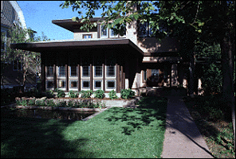

|
|
Purcell-Cutts House |
|
 The Purcell-Cutts house is an excellent example of the Prairie School
style of American architecture. The house is open to the public the
second weekend of each month. Admission is $5 for adults; $4 for students
and seniors; and free to Institute members and children 12 and under.
Reservations are required; call (612) 870-3131.
Send us your comments. |